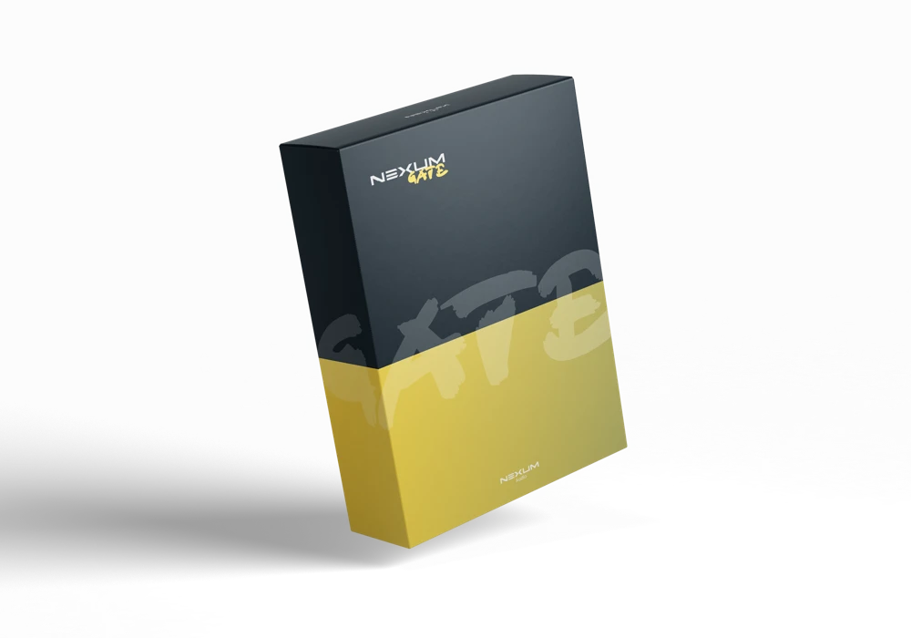

Shaper: draw the space.
Start with one of 16 quick-access curve icons or draw a custom 33-point volume curve. Set depth, note division and phase offset, with a moving playhead to show the cycle. Dotted and triplet divisions are available.
SHAPER · GATE · PAN
Ducking curves, programmable gates and stereo motion in three independently switchable cards. Shape the level, build the rhythm and move it through the stereo field in one serial signal path.

A CLOSER LOOK
Nexum Gate
Shaper · Gate · Pan
Start with one of 16 quick-access curve icons or draw a custom 33-point volume curve. Set depth, note division and phase offset, with a moving playhead to show the cycle. Dotted and triplet divisions are available.
Low Band Only applies shaping below an adjustable crossover from 40 Hz to 2 kHz. Preserve the upper part of the sound while the bass follows the curve.
Use eight pattern slots, each with 1–64 steps and its own resolution. Switch steps, drag their levels and tie adjacent enabled steps together. Copy a complete pattern to another slot, including its ties and timing.
Attack, Decay, Sustain, Release, Gate Length and Depth shape the gate. Ties keep the envelope continuous across adjacent steps; release can continue into off steps.
Add stereo movement with its own rate, depth and offset. Switch Shaper, Gate and Pan independently; bypassed modules pass the signal through. The signal-flow lane shows the level after each stage.
HOST follows DAW tempo and transport position; FREE runs at your tempo. MIDI note-ons or an audio threshold can restart a cycle. MIDI and AUDIO modes play one cycle per trigger, then return to unity or centre.
Use the common preset header and PRESETS library, with names, author, category, description, notes, tags and rating. Growable macros store their values, labels and continuous-control links with the patch.
Global Mix, Master, bypass and paired L/R meters match the rest of the family. Gate accepts mono or stereo audio. The panner operates on stereo; mono audio remains unchanged.
YOUR WORKFLOW
Choose a shaper curve or draw the movement yourself.
Set gate steps, levels and ties, then shape the envelope.
Add Pan and adjust depth, timing and mix in the context of your track.
Signal flow: Shaper → Gate → Pan → Mix → Master. Low Band Only uses an internal crossover rather than an external sidechain input. Timing offsets shift phase; they are not lookahead. In FL Studio, MIDI triggering requires MIDI routing to the effect wrapper.
GET STARTED
A free, open-source plugin.
No account or subscription required.
Development build · packaged 07 Nov 2026 · Windows x64
Windows download Complete suite source · 07 Nov 2026 ↗Download the Windows ZIP and extract it into its own folder.
Copy the entire Nexum Gate.vst3 folder to C:\Program Files\Common Files\VST3\NEXUM.
Run a fresh plugin scan in your DAW and load Nexum Gate as an audio effect. The EXE in the ZIP opens the standalone.
ALSO IN THE FAMILY